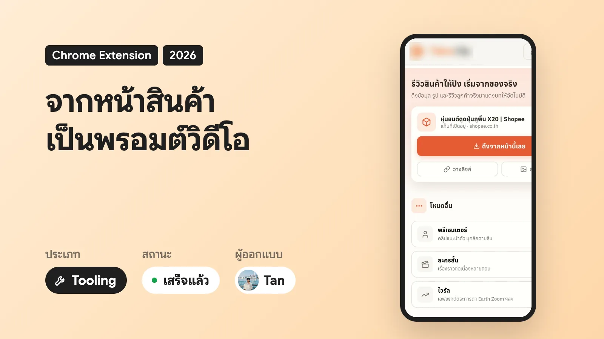
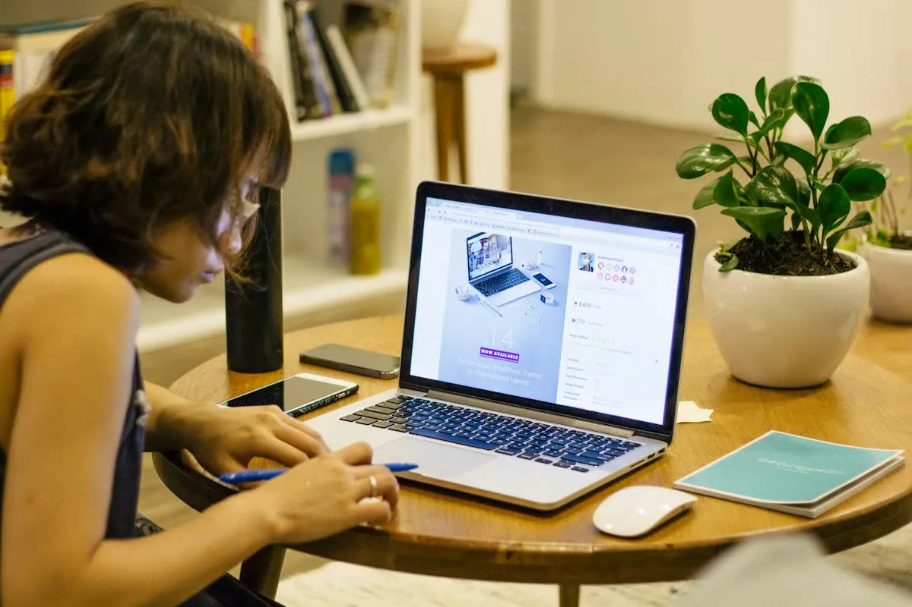
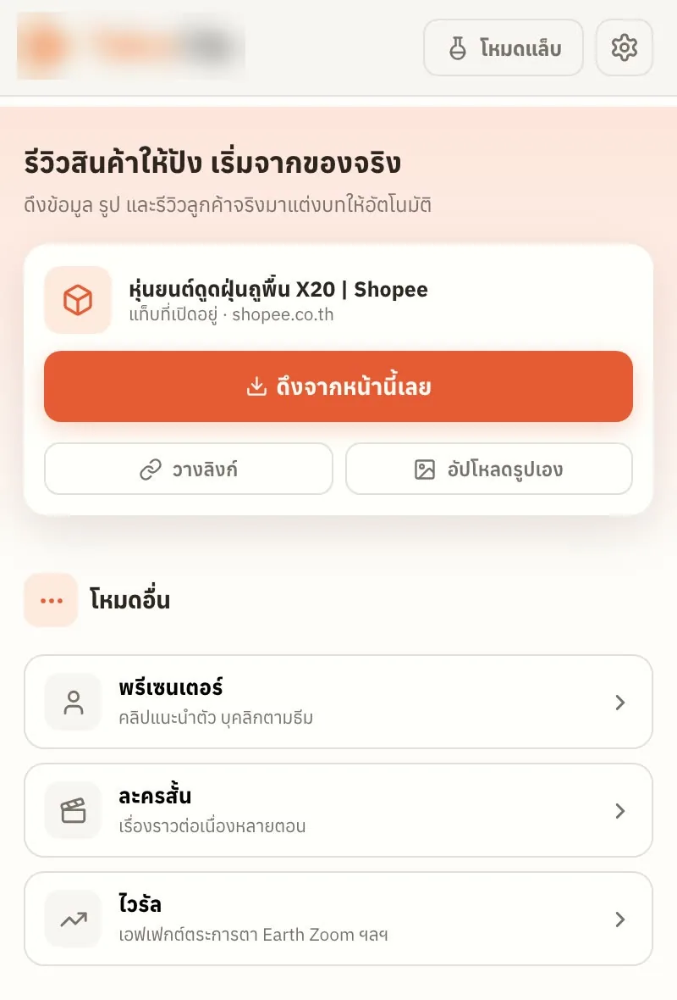
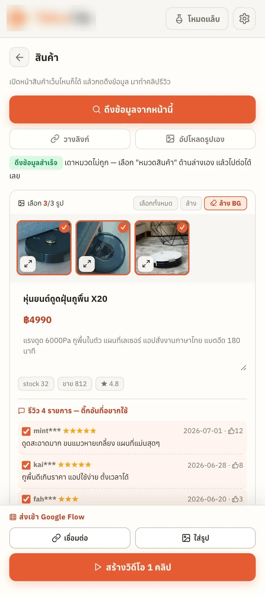
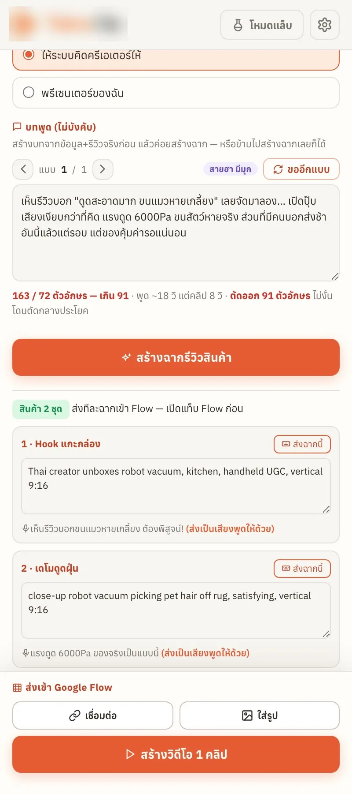
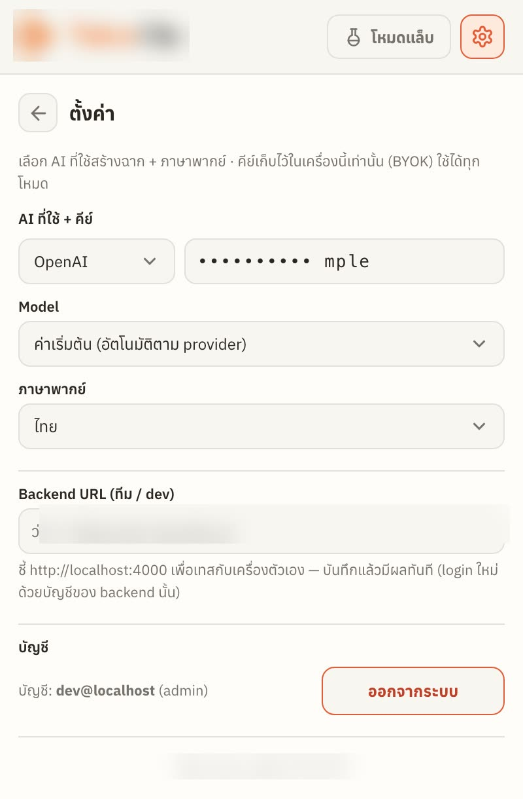
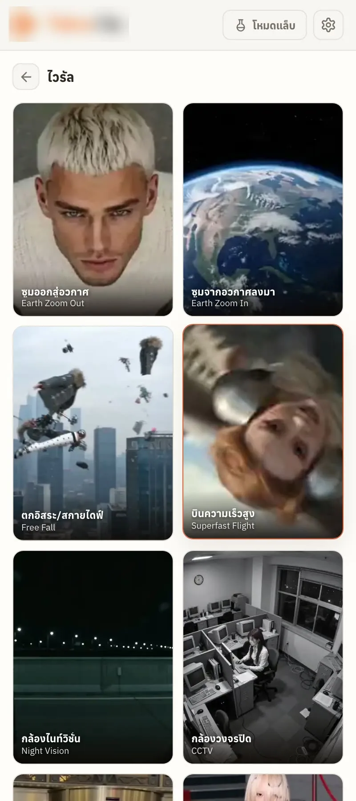
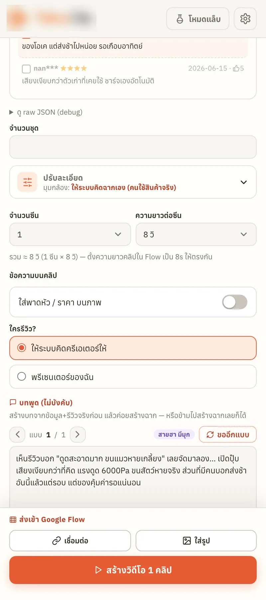
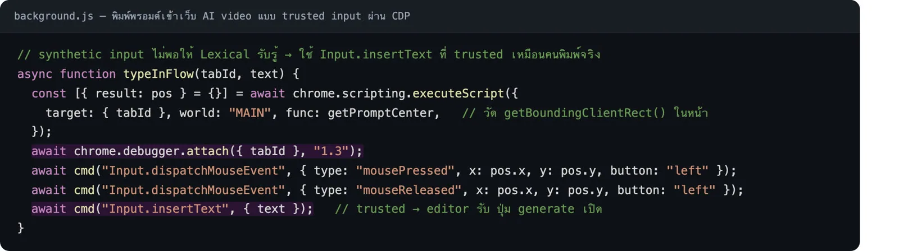
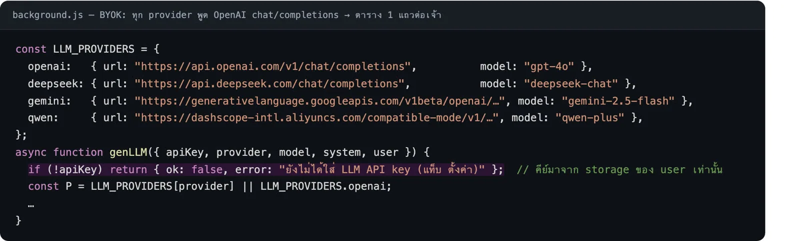

UGC Extension
Chrome extension (MV3, Side Panel) + full-stack CMS ที่ต่อ 3 งานเป็นสายเดียว — scrape สินค้า, ประกอบพรอมต์วิดีโอ (BYOK LLM), แล้วป้อนเข้าเว็บสร้างวิดีโอ AI ที่ไม่มี public API ผ่าน CDP อัตโนมัติ · แก้พรอมต์/ตัวเลือกได้เองจาก backoffice โดยไม่ต้อง ship extension ใหม่

Chrome extension (MV3, Side Panel) ที่ทำงานเป็นสายเดียว: ดึงข้อมูลสินค้าจากหน้าเว็บ (passive scrape) → ประกอบ system prompt จาก CMS แล้วเรียก LLM ของ user เอง (BYOK) → ป้อนพรอมต์ + ยัดรูป + กด generate เข้า เว็บสร้างวิดีโอ AI ที่ไม่มี public API ผ่าน CDP โดยอัตโนมัติ · หลังบ้านเป็น NestJS API + CMS ที่แก้พรอมต์/ตัวเลือกได้เองโดยไม่ต้อง ship extension ใหม่
ปัญหาที่เจอ
ทำไมการทำวิดีโอ UGC รีวิวสินค้าด้วย AI ถึงยังต้องนั่งก๊อป-วาง-กรอกมือเป็นสิบขั้น?

เครื่องมือสร้างวิดีโอ AI ที่คุณภาพดีสุดสำหรับครีเอเตอร์ไทย ไม่มี public API — ต้องเข้าเว็บ พิมพ์พรอมต์เอง อัปรูป reference เอง กด generate ทีละซีน · ก่อนถึงตรงนั้นยังต้องหาข้อมูลสินค้า เขียนพรอมต์ภาษาอังกฤษให้ดี ทำซ้ำทุกสินค้า ทุกซีน เสียเวลามหาศาลและไม่ consistent
หาข้อมูลสินค้ามากรอกเองทุกครั้ง
ชื่อ/ราคา/รูปสินค้าอยู่กระจายในหน้าเว็บ — ก๊อปทีละช่อง ทำซ้ำทุกสินค้า · เว็บอีคอมเมิร์ซหลายเจ้ายังมี anti-bot ที่บล็อกการดึงข้อมูลแบบ automate
เขียนพรอมต์วิดีโอที่ดีไม่ใช่เรื่องง่าย
พรอมต์วิดีโอที่ให้ผลสวยต้องเป็นภาษาอังกฤษ มี framing/lighting/มุมกล้อง ครบ — คนทำคอนเทนต์ไม่ควรต้องมานั่งเขียนเองทุกซีน ทุกโหมด
เว็บ AI video ไม่มี API ให้ต่อ
ตัวที่คุณภาพดีสุดสั่งงานได้แค่ผ่านหน้าเว็บ — พิมพ์พรอมต์ อัปรูป กด generate กด + เพิ่มซีน ด้วยมือทุกครั้ง ไม่มีทางยิง request ตรง
แก้พรอมต์/ตัวเลือกทีต้อง ship ใหม่ที
ถ้าพรอมต์และตัวเลือก (ธีม/มุมขาย/เอฟเฟกต์) ฝังอยู่ในโค้ด extension — จูนพรอมต์แต่ละครั้งต้อง build + แจก extension ใหม่ ช้าและไม่ยืดหยุ่น
เก็บ LLM key ให้ user = ความเสี่ยง
ถ้าระบบถือคีย์ AI ให้ user ต้องแบก cost/quota + ความเสี่ยงคีย์รั่วฝั่งเรา — เป็นภาระที่ไม่อยากรับตั้งแต่วันแรก
วิธีแก้ปัญหา
ให้ extension ต่อ 3 งานเป็นสายเดียว — scrape → gen prompt → ป้อนเข้าเว็บ AI video — เหลือแค่ "เลือก แล้วกด Auto"

Passive scrape ผ่าน anti-bot
content script ทำงานบนหน้าที่ user เปิดเอง — ดึงชื่อ/ราคา/รูปจาก Shopee API, JSON-LD, __NEXT_DATA__ โดยไม่ trigger anti-bot ที่บล็อกการ navigate อัตโนมัติ
ประกอบพรอมต์จาก CMS + LLM ของ user
ประกอบ system prompt จาก Tab.systemPrompt + Option.promptFragment ที่ดึงจากหลังบ้าน แล้วส่งเข้า LLM ของ user เอง (BYOK) → ได้การ์ดพรอมต์ EN + บทไทย แก้ต่อได้
Flow executor ผ่าน CDP
ใช้ chrome.debugger พิมพ์พรอมต์แบบ trusted keystroke, ยัดรูป reference ผ่าน DataTransfer, กดปุ่ม generate + ปุ่มเพิ่มซีน — ป้อนงานเข้าเว็บ AI video ที่ไม่มี API ให้อัตโนมัติ
Config-driven — แก้จาก CMS ไม่ต้อง ship
พรอมต์/ตัวเลือก/รูปปกทั้งหมดอยู่หลังบ้าน แก้ผ่าน backoffice CMS → extension ดึง GET /config มา render — จูนพรอมต์ได้ทันทีโดยไม่ต้อง build extension ใหม่
BYOK — ไม่ถือคีย์ให้ใคร
user ใส่ LLM key ของตัวเอง เก็บใน chrome.storage.local ของเครื่องนั้น ไม่ส่งเข้า backend — ไม่มี proxy, ไม่รับ cost/quota, ไม่มีความเสี่ยงคีย์รั่วฝั่งเรา
วิธีทำงาน — 4 จังหวะ
ตั้งแต่เปิดหน้าสินค้า จนวิดีโอเริ่ม generate ในเว็บ AI


ดึงข้อมูลสินค้า
เปิดหน้าสินค้าตามปกติ → กด "ดึงข้อมูล" → passive scrape ชื่อ/ราคา/รูป
เลือกโหมด + ตัวเลือก
เลือกพรีเซนเตอร์/สินค้า/ละครสั้น/ไวรัล + ธีม/มุมขาย/เอฟเฟกต์ จาก config
LLM ประกอบพรอมต์
คีย์ของ user → ได้การ์ดพรอมต์ EN + บทไทย แก้ไขต่อได้
Auto → เว็บ AI video
CDP พิมพ์พรอมต์ + ยัดรูป + กด generate + เพิ่มซีนถัดไป
Tech Stack & Architecture
3-tier — clients (extension + CMS) คุยผ่าน NestJS API เท่านั้น ไม่แตะ DB ตรง

MV3 + Side Panel ให้ UI ค้างข้างหน้าเว็บ target ได้ตลอด (ต่างจาก popup ที่ปิดเมื่อคลิกออก) · chrome.debugger (CDP) เป็นทางเดียวที่ยิง trusted input เข้าเว็บที่ไม่มี API ได้ · NestJS + Prisma + PostgreSQL ให้ backend มีโครง module/guard/DI ชัด + migration ปลอดภัย · Config-driven ย้ายพรอมต์/ตัวเลือกขึ้น CMS — แก้ได้โดยไม่ต้อง ship extension ใหม่ · Vanilla JS ฝั่ง extension — ไม่มี build step, โหลด unpacked ได้เลย
สิ่งที่สร้าง — 8 ความสามารถหลัก
ครบ loop ตั้งแต่ดึงข้อมูลสินค้า ถึงป้อนงานเข้าเว็บ AI video

Passive Product Scraper
ดึงชื่อ/ราคา/รูปจากหน้าที่ user เปิดเอง — Shopee API, JSON-LD, __NEXT_DATA__, dom-scan · ผ่าน anti-bot · เว็บที่ไม่รองรับ = กรอกเองได้ (editable)
Image Gatherer + Picker
รวมรูปทั้งหน้า + ให้เลือกรูป reference ที่จะยัดเข้าเว็บ AI video เป็นภาพอ้างอิงของซีน
Config-driven Prompt Engine
ประกอบ system prompt จาก Tab.systemPrompt + Option.promptFragment — แทน {{fieldKey}} ด้วยตัวเลือก/ค่าที่กรอก
Multi-provider LLM (BYOK)
OpenAI / DeepSeek / Gemini / Qwen ผ่าน OpenAI-compatible endpoint เดียว + JSON mode — เพิ่ม provider = เพิ่มแถวเดียวในตาราง
Flow Executor (CDP)
พิมพ์พรอมต์ (trusted keystroke), ยัดรูป reference (DataTransfer), กด generate + เพิ่มซีน — locate ปุ่ม/ช่อง by text/role
Background Removal
ล้างพื้นหลังรูปสินค้าผ่าน OpenAI image edit (fallback หลาย model) — ได้ PNG โปร่งไว้เป็น reference สะอาด
Backoffice CMS
แก้พรอมต์/ตัวเลือก/รูปปกได้เอง 3 ระดับ (tab → field → option) + อัปโหลดปก S3 — แก้แล้ว extension เปลี่ยนตาม ไม่ต้อง ship
Auth + Audit + Users
JWT + bcrypt (เช็ค DB จริง ไม่ใช่ env), audit log ทุก mutation (ใครแก้อะไร), users CRUD + role guard
หน้าตา Side Panel
เปิดข้างหน้าเว็บ target → ดึงสินค้า → ได้การ์ดพรอมต์ → กด Auto

Hack กับปัญหา
6 โจทย์ที่ต้องคิดทางแก้เอง — browser automation quirk + full-stack product architecture

เว็บ target ไม่รับ synthetic keystroke
ช่องพรอมต์ใช้ rich-text editor (Lexical) ที่ปุ่ม generate จะเปิดก็ต่อเมื่อมี input จริงจากคน — ยิง event ด้วย JS ธรรมดา editor ไม่รับรู้ ปุ่มไม่เปิด
chrome.debugger (CDP) — Input.insertText + dispatchMouseEvent เป็น trusted input เหมือนคนพิมพ์จริง · หา center ของช่อง/ปุ่มด้วยการ inject function เข้าไปวัด getBoundingClientRect() ในหน้าเว็บอีคอมเมิร์ซบล็อกการ scrape
เปิด URL สินค้าจาก automation ตรงๆ มักโดน WAF/anti-bot บล็อก — ดึงข้อมูลไม่ได้ตั้งแต่ต้น
passive scrape — content script ทำงานบน "หน้าที่ user เปิดเอง" (เสิร์ช/กดจากหน้าร้านตามปกติ) จึงไม่ trigger anti-bot ที่จับ automated navigation · แยก adapter ต่อเว็บ (Shopee API / generic JSON-LD)DOM เว็บ target เปราะ + มีปุ่มหลอก
เว็บ target ใช้ class random (sc-*) ที่เปลี่ยนทุก build — locate ด้วย selector ตายตัวไม่ได้ · ปุ่ม "+" (เพิ่ม source) กับปุ่ม generate มีคำใกล้กัน กดผิดพัง
by-text/by-role แทน class — filter ปุ่มที่ visible + enabled + ข้อความ match generate/create แล้วตัดปุ่ม add ทิ้งชัดเจน (ถ้าไม่เจอปุ่มที่ถูก = คืน null ไม่ fallback ไปโดนปุ่มอื่น)พรอมต์/ตัวเลือก hardcode = จูนที ship ที
เดิมพรอมต์ 4 โหมด + ตัวเลือกทั้งหมดฝังใน sidepanel.js — จูนพรอมต์แต่ละครั้งต้อง build + แจก extension ใหม่
GET /config มา render · มี config-fallback.js (auto-gen จาก seed) ให้ทำงานได้แม้ backend ล่มถือ LLM key ให้ user = แบกความเสี่ยง
ถ้า backend เก็บคีย์ AI แทน user ต้องแบก cost/quota + ความเสี่ยงคีย์รั่ว + ต้องทำ proxy layer เพิ่ม
chrome.storage.local ของ user เท่านั้น ไม่เข้า backend · ไม่มี LLM proxy, ไม่รับ cost, ตัดความเสี่ยงคีย์รั่วฝั่งเราออกทั้งหมดรองรับหลาย LLM provider โดยไม่บวมโค้ด
user อาจใช้ OpenAI / DeepSeek / Gemini / Qwen — เขียน integration แยกทีละเจ้าคือโค้ดซ้ำ + maintain ยาก
Design Decision ที่ตั้งใจเลือก
ขอบเขตที่จงใจ "ไม่ทำ" สำคัญพอๆ กับสิ่งที่ทำ

extension นี้เป็น "สะพาน" ไม่ใช่ "โรงงาน" — มันช่วย scrape, ประกอบพรอมต์ และป้อนงานเข้าเว็บ AI video ให้เร็วขึ้น แต่ จบที่ "สั่ง generate" · ไม่ตัดต่อให้ (user ทำเอง), ไม่ถือ LLM key, ไม่แตะ DB ตรง (คุยผ่าน API เท่านั้น) — ขอบเขตชัดตั้งแต่ต้น = implement ตรงและ maintain ง่าย
BYOK ตลอดทุก phase
คีย์อยู่กับ user เท่านั้น — ไม่ถือ ไม่ proxy ไม่แบก cost
Config-driven
แก้พรอมต์/ตัวเลือกจาก CMS ไม่ต้อง ship extension ใหม่
Clients คุยผ่าน API
extension/CMS ไม่แตะ DB ตรง — โครงชัด ควบคุม auth/audit ได้
จบที่ "สั่ง generate"
ไม่ตัดต่อให้ — ขอบเขตคม เครื่องมือเล็ก โฟกัส
Knowledge Domain ที่แข็งขึ้น
5 พื้นที่ความรู้ที่ระดับเราขยับขึ้นจริงจากการทำโปรเจกต์นี้
เข้าใจ Side Panel lifecycle, service worker แบบ event-driven, และที่ลึกสุดคือ chrome.debugger (CDP) — ยิง trusted mouse/keyboard event, inject function เข้า MAIN world เพื่อวัดตำแหน่ง element แล้วสั่งงานเว็บที่ไม่มี API ได้ทั้ง flow บทเรียน: เมื่อไม่มี API, browser automation ที่ทำถูกวิธีคือสะพานที่ใช้ได้จริง
ออกแบบ NestJS (module/DI/guard) + Prisma + PostgreSQL + JWT/bcrypt + audit log + S3 upload และ Next.js CMS ที่คุยกันผ่าน REST เท่านั้น — เห็นภาพว่า auth, migration, audit, media storage ต่อกันเป็นระบบยังไง บทเรียน: กติกา "clients คุยผ่าน API เท่านั้น" ทำให้ระบบคุม security/audit ได้ที่จุดเดียว
ย้ายพรอมต์/ตัวเลือก/รูปปกจาก hardcode ขึ้น CMS + วาง data model Tab → Field → Option ที่ประกอบเป็นพรอมต์ได้ + fallback strategy (bundled config เมื่อ backend ล่ม) บทเรียน: สิ่งที่ต้องแก้บ่อย (พรอมต์) ควรอยู่ที่ที่แก้ได้โดยไม่ต้อง deploy
เข้าใจว่า passive scrape ผ่าน anti-bot ได้เพราะทำงานบนหน้าที่ user เปิดเอง + ดึงข้อมูลจากหลายชั้น (API / JSON-LD / __NEXT_DATA__) + locate ปุ่มบนเว็บที่ class เปลี่ยนตลอดด้วย text/role แทน class บทเรียน: automation ที่ทนต่อการเปลี่ยนแปลงต้องยึด "ความหมาย" ของ element ไม่ใช่ชื่อ class
ใช้ OpenAI-compatible endpoint + JSON mode ครอบหลาย provider ด้วยตาราง config เดียว, ออกแบบการประกอบ prompt แบบ 2 ชั้น (system template + fragment), และวางนโยบาย BYOK เป็น constraint ตั้งแต่ต้น บทเรียน: ตัดสินใจเรื่อง key ownership + provider abstraction ตั้งแต่วันแรก ประหยัดการรื้อทีหลังมหาศาล